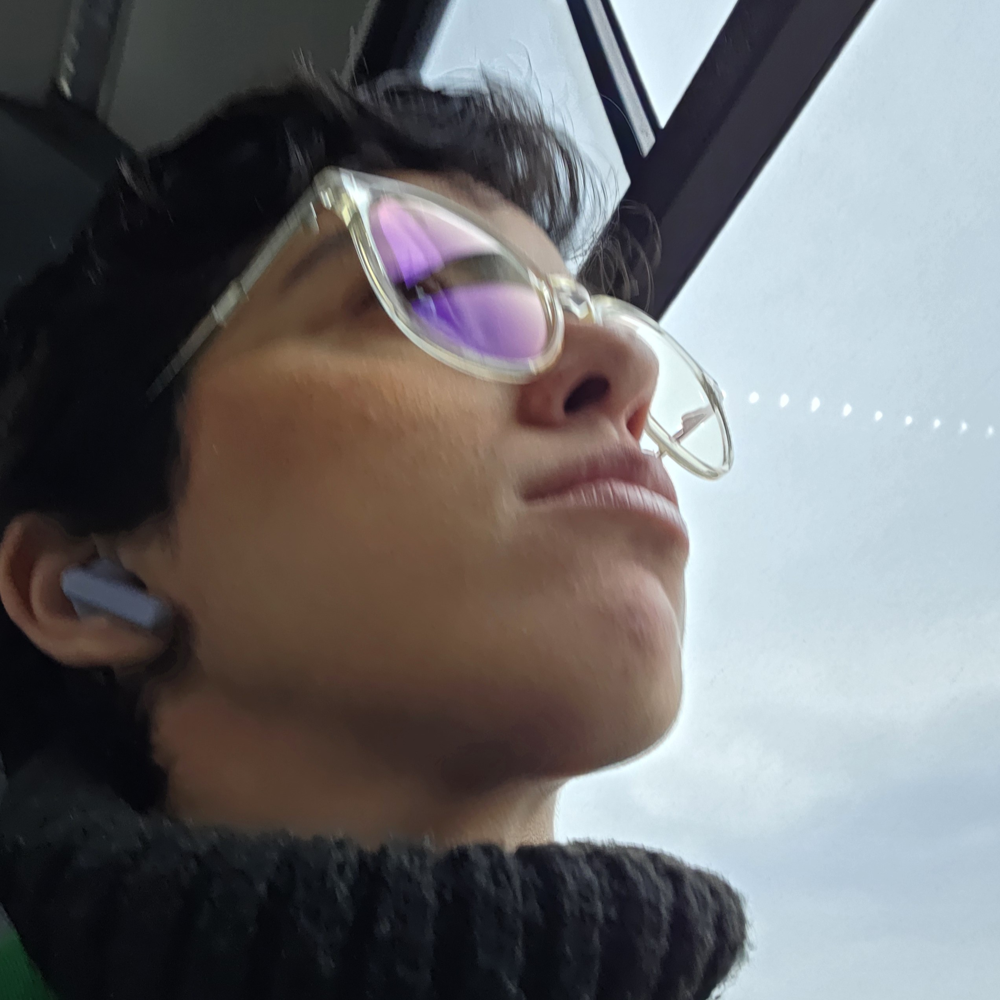
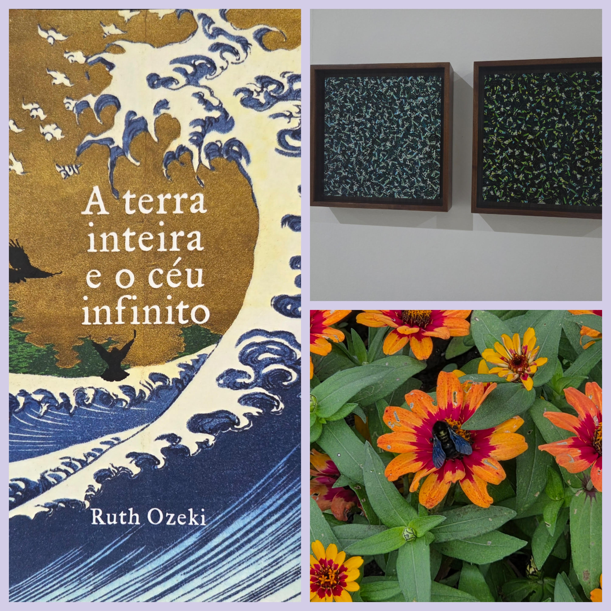
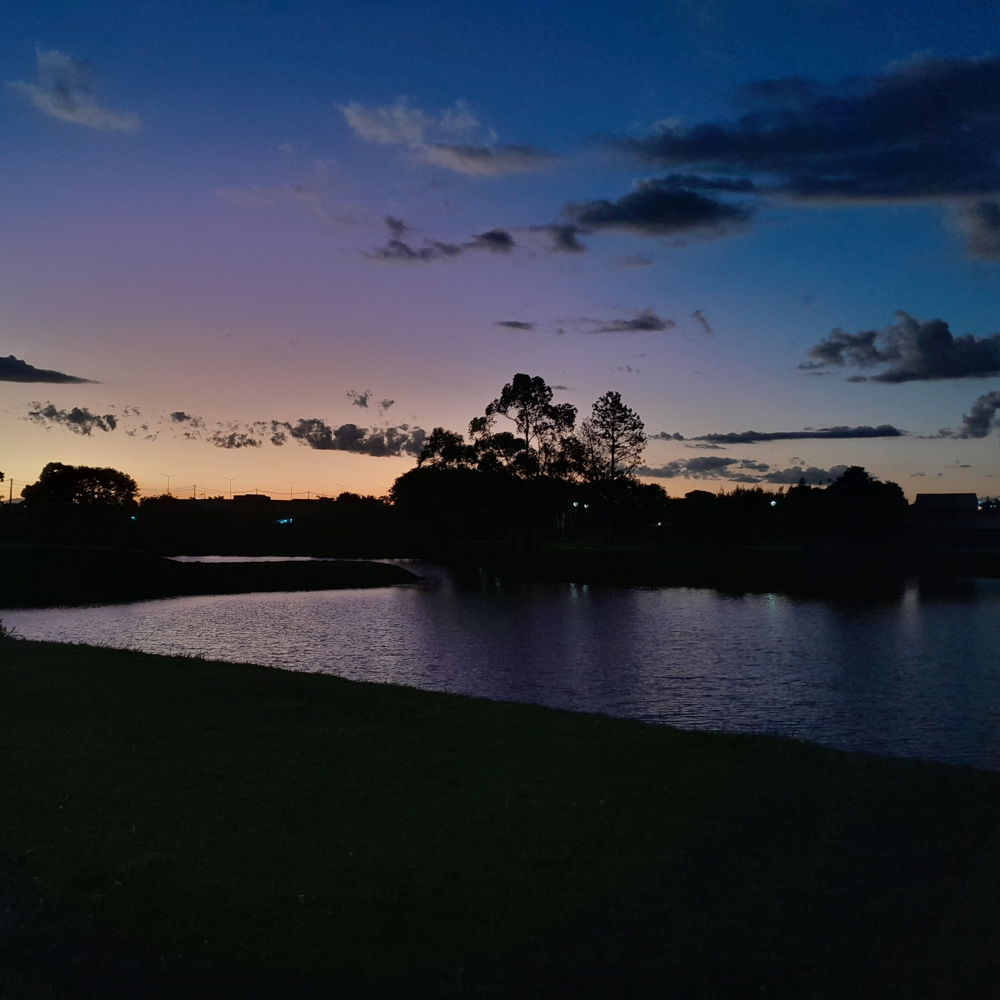

Informações pessoais

- Nome: Ulli Carolina Vieira de Lima;
- Idade: 27 anos;
- Naturalidade: Curitiba - Paraná;
- Formação: Oceanógrafa, Técnica em Gestão Ambiental e estudante de Engenharia de Software;
- LinkedIn: Ulli Carolina.


Nesse ano de 2026, estabeleci, dentre várias outras coisas, uma meta de leitura mensal e, ao longo dos últimos meses, venho redescobrindo minha paixão pela leitura. Até o momento em que estou confeccionando este portfólio, já li 10 livros e estou lendo outro.
Além disso, no meu tempo livre, tenho buscado explorar os museus e parques da cidade onde eu moro, quase sempre acompanhada dos meus irmãos, meus maiores parceiros nessas horas. Entendi, durante o último ano, que a arte é algo muito importante na minha vida, e tenho buscado me reconectar com esse meu lado diariamente, pouco a pouco.

Olá! Tudo bem? Meu nome é Ulli Carolina e o seu? Sou uma paranaense de 27 anos, formada em Oceanografia pela Universidade Federal do Paraná (UFPR), e em Tecnologia em Gestão Pública pelo Centro Universitário Internacional (UNINTER).
Atualmente, curso Engenharia de Software na UNINTER e trabalho como Recepcionista Bilíngue.
Meu objetivo e sonho é me tornar concursada em uma das minhas áreas de formação, e poder usar meu tempo livre para aprimorar meus conhecimentos em algumas áreas de interesse, como o aprendizado de idiomas, desenho, design gráfico e outros.
Seja bem vindo(a) ao meu Portfólio Pessoal e sinta-se à vontade para me contatar, tirar dúvidas, apresentar propostas e etc.